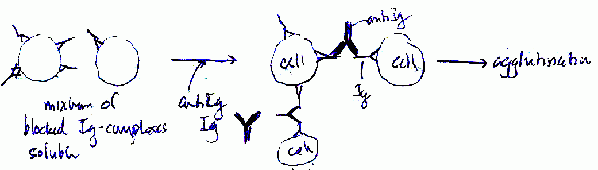
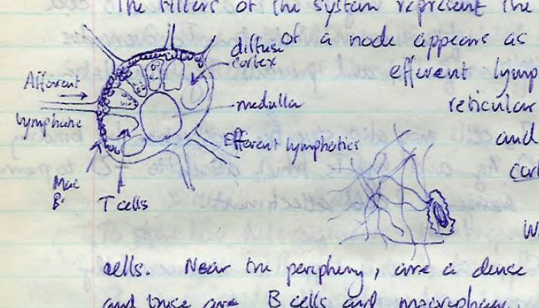
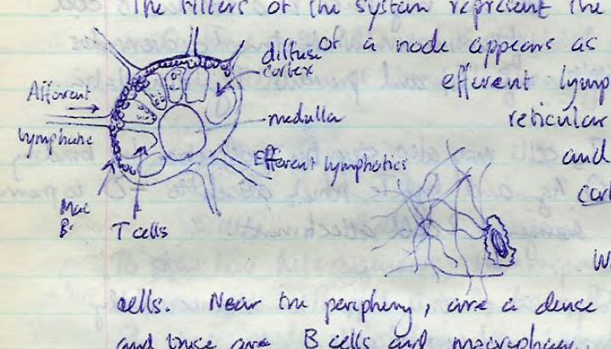
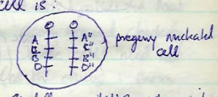
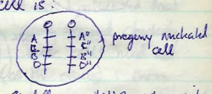
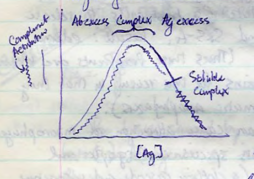
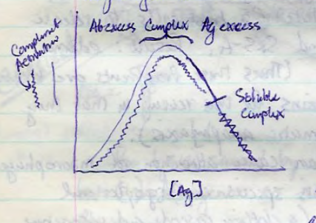

These lecture notes from the course Veterinary Microbiology 126 taught at University of California, Davis in Fall 1982 (by Dwight Hirsh?) with notes taken by S. M. Halloran.
24 Sep 1982
Grading in course is by three examinations, two midterms and one final.
Immunoglobulins are agents against infective bodies (antigens). These agents are usually proteinaceous and present in blood. Lymphocytes represent the tissue of importance in immunology.
The B lymphocyte is the cell in this tissue that confers humoral immunity when it assumes a mature form known as the plasma cell. The differentation of this lymphocyte is determined by special immunostaining techniques and by biochemical tests. Typical cytological features of the plasma cell are:
- extensive rough endoplasmic reticulum
- an eccentric nucleus taking up half the cell area
- basophilic cytoplasm (due to abundant RNA)
- loss of proliferative capacity (unable to undergo mitosis/cell division)
In the figure below is the typical protein profile of serum proteins separated
by electrophoresis in a buffer such as pH 8.6 veronal. The gamma globulin
fraction becomes a significant amount of the protein when the individual from
whom the serum was taken is hyperimmunized. Within the gamma globulin fraction
is great heterogeneity.
Ig Structure
The central element in immunology is the immunoglobulin. Several experiments were done to examine its structure. In 1959 Porter et al. treated the Ig with the plant protease papain and then examined the product by ion-exchange chromatographic separation. They found three fragments. Two fragments were named FAB (for fragment antigen-binding) and both had a mass of about 45 kDa. The bound the antigen monovalently. The other fragment FC (for fragment crystallizable) had a mass of about 50 kDa and was very homogeneous. It bound no antigen in vivo, but did serve a useful purpose.
The protease pepsin also selectively cleaves the Ig molecule. Its products are 100 kDa fragment denoted F′AB (2) and is bivalent in binding antigen. The FC fragment found with papain digestion is not present at all with pepsin, but is totally lost (apparently being thoroughly digested).
Other interesting findings occur when reducing agents are used to disrupt disulfide bond formation. The following findings are made:
- Treatment of Ig molecule with reducing agents produces two fragments, one with a mass of about 50 kDa and the other about half the mass at 25 kDa.
- For the products of papain-digested Ig, reduction of FAB fragment produces two fragments, one about 25 and the other 20 kDa. Treatment of FC produces one fragment about 25 kDa. This suggests that dimeric units make up these fragments.
- For the pepsin digest product F′AB (2), two fragments are produced, one slightly larger than the other, and both larger than the corresponding fragments produced from reduced FAB fragment from papain-digested Ig.
From these analyses, it was determined that Ig is composed of two heavy chains and two light chains, with the heavy chains bound to each other by a disulfide bond and each light chain bound to its heavy chain by a pair of disulfide bonds.
Light chains come in two classes, which are based up differences in amino acid sequences in the (relatively) C (constant) region. These classes are κ and λ. In each Ig, there is only one class or type of light chain, not a mix; thus an Ig molecule will not have one light chain κ and the other λ. The same is also true for the heavy chain classes. This is because a single Ig-producing cell makes a single type of immunoglobulin, not a mix of them, when it matures. 60% of all human Igs have κ light chains, and 40% have λ. In mice, ≥ 90% of all Igs have κ as light chains. In the horse, most light chains are of the λ type.
Multiple myeloma is a condition in which plasma cells proliferate uncontrolled (neoplastic plasma cell tumors). Plasma cells normally are not proliferative. Multiple myeloma is usually detected by serum electrophoresis in which multiple sharp bands appear in many parts of the gel. Not just in the gamma globulin fraction, but even in the beta and alpha globulin fractions.
Bence-Jones proteins are seen when plasma cells become myelomatous. These proteins are in fact light chains that become overabundant in the blood. The typical reaction of the body is to eliminate these proteins in the urine. The light chains dimerize with one another to form the Bence-Jones proteins. Edelman recovered these proteins from urine and boiled them to denature the dimers. He then sequenced them. In some regions or domains of the light chain (kappa type), he found a variable light chain domain (VL) and a constant light chain domain (CL) shown in the figure below.
 Some regions of the light chain were found to be hypervariable. These
hypervariable regions actually give the antibody its specificity to the antigen.
The hypervariable region of the heavy chain (VH) comprise up to
one-fourth to one-third of the total length of the chain.
Some regions of the light chain were found to be hypervariable. These
hypervariable regions actually give the antibody its specificity to the antigen.
The hypervariable region of the heavy chain (VH) comprise up to
one-fourth to one-third of the total length of the chain.
Immunoglobulin G structures are divided into subclasses. IgG subclass 1 (denoted IgG1) is distinguished by having constant domains with intrachain disulfide bonding. IgG1 has two disulfide bonds in the constant domain. IgG2 has four disulfide bonds. IgG3 has multiple disulfide bonds, and IgG4 has fewer than IgG3 but more than IgG2. They vary in their ability to cross the placenta, fix complement, bind to monocytes and mast cells, and to Staph protein A.
Hybridomas are a fusion of myeloma tumor cells and normal lymphocytes. Fusion can be achieved by incubating cells in the presence of polyethylene glycol (PEG) or sendai virus. This produces a fused cell with a heterokaryon, but eventually the nuclei fuse and a cell that proliferates and secretes humoral antibody is produced. The mix of cells can be placed in a medium deficient in nutrients required by unfused myeloma cells, so as to starve them and keep them from competing for proliferative capacity. Normal lymphocytes cannot proliferate at all. But the hybridomas proliferate because they can overcome the nutrient deficiencies of the medium which they obtained from the lymphocyte genome, and they retain mitotic ability from the genome of the myeloma cell line.
Some definitions:
- isotypic determinants
- Ig classes such as IgG, IgA, IgM, IgE, IgD
- allotypic determinants
- subclasses of Ig isotypes with no change in valence or ligand binding; these have minor but not functional variations in amino acid sequences
- idiotypic determinants
- idiotypic means ‘peculiar to the individual’; one antibody from one person against ovalbumin is not the same as another person's anti-ovalbumin
Allotypes show amino acid variation in the constant region of the heavy chain, while idiotypes shows variation the constant region of the light chain.
27 Sep 1982
Evidence for the structure of immunoglobulin molecules thus comes from
- use of enzymes and chemicals to degrade the structure and analyze its degradation products
- study of tissue cell cultures of abnormal phenotypes of the cells that produce immunoglobulins
Bence-Jones proteins are L chains of the Ig that produced two different types of L chains: κ and λ. Only one type occurs in any one Ig however. The occurrence of these L chain types varies among species (see table)
| Species | κ | λ |
|---|---|---|
| Human | 60% | 40% |
| Murine | ≥90% | ≤10% |
| Equine | less | mostly |
L chains have CL and VL domains. Variable regions also have hypervariable regions. The VL domain makes up 25-33% of the sequence length.
In one experiment with IgGs, antigens were labeled with diDNPs
(two dinitrophenols) and them mixed with their anti-antigen immunoglobulins.
Electron microscopy revealed the following structures:

Again, at phenotypic maturity, a plasma cell will make only a single idiotypic Ig, thus the paired heavy and light chains making up an Ig are molecularly identical.
IgG
85% of immunoglobulins produced are IgG immunoglobulins. The proteins sediments at ~7S, has a MW of 150 kDa. The studies with papain and pepsin digestion, and with anti-rabbit FC and FAB and goat IgG provide the information about its structure. Precipitation reaxns with rabbit heavy and light chains show that the heavy chain is present in the FC and FAB portion, and that light chains are present only in the FAB portion.
IgG shows for subclasses with different “hinge lengths.” There are 4 domains on the heavy (H) chain, and 2 domans on the L chain. The H chain has a constant domain designated as γ, and the L chain has either a κ or λ constant domain.
IgM
Studies show that this immunoglobulin sediments about 19S, and the MW ranges from 750 to 900 kDa. IgM can feature a J chain with mass of about 15 kDa, which appears to join a pentameric set of light and heavy chain associations. The H chain of IgM features 5 domains, and the L chain 2 domains. The H chain has a constant domain designated μ while the L chain can be κ or λ in its constant domain.
IgM is good at fixing complement and agglutination. The antigen has to be relatively small because the pentameric IgM structure does not allow for it to bind to bigger substrates if agglutination is to take place.
IgA
There are two classes of IgA, based on the composition of the heavy chain. Class I has a α1 heavy chain and makes up 80% of IgA in serum, while class II has a α2 heavy chain and makes up 20% of IgA. In serum, IgA occurs as a monomer of the standard two heavy and light chains. But in exosecretory fluid (saliva, sweat, mucus), IgA is dimerized by a glycoprotein called the J chain.
IgD
Formation of this antibody appears to be related to a histopathological condition. It is seen with rare myelomas. The heavy (H) chain has five domains (δ domains). The light chain is mostly the λ form. These antibodies sit on the B lymphocyte surface.
IgE
This antibody is called reagin
. The H (heavy) chain is of type
ε, and the L (light) chain can be either κ or λ.
The FC portion of IgE binds to receptors present on mast cells. Mast cells are mature eosinophils, with many granules containing powerful chemicals, especially histamine. Histamine causes smooth muscle relaxation, particularly those around arterioles. This allows blood flow to flood a tissue in which the chemical is present, making the tissue appear red. It is this redness that is seen in allergic reactions, which are caused by IgE biology.
The J chain is small peptide associated with IgM and IgA, allowing multimer formation. IgA exists in mono- and dimeric forms in serum, but when secreted it exists only as a dimer. It might enhance its effectiveness in this way.
The secretory component is an epithelial cell-produced peptide which combined with dimeric IgA and might enhance its
- solubilization in mucus
- protection against enzymatic digestion by intestinal proteases
It then becomes designated sIgA.
Two subclasses of IgA exist. One has an interchain -S-S- between H and L, and another has an -S-S- between the two L chains. One subclass is sensitive to an IgA protease secreted by certain virulent and pathogenic bacteria. Both subclasses have secreted forms, with the more resistant subclass being secreted in larger quantities.
IgM is usually a pentamer in most higher
animals, but is a monomer in the
supposedly more primitive. It is not permeable to blood vessel linings or
tissues. The H chain (μ) has four CH and one VH domains.
It is typically reactive with flagella. It is excellent at agglutination
(binding cells together).
Functions of Ig. Several reactions are predominant functions of immunoglobulins:
- Opsonization. A fundamental role of IgG, which is to bring phagocytic cells in proximity to Ags or the things attached to them
- Complement fixation or Activation. This can be accomplished only by IgM and IgG.
- Mast Cell Activation. essentially a function of IgE, although a subclass of IgG can do so in a lower animal
Structural differences in the Ig chains are sequence variations, and the \ classification nomenclature is as follows:
- isotypic refers to differences in the γ, α, δ, μ, κ, or λ chains
- allotypic refers to differences that occur between individuals. Differences that occur between CH and CL domains in individuals are allotypic
- idiotypic refers to differences occurring in the variable region to antibodies that bind the same epitope on an antigen
29 Sep 1982
An immunogen is effectively an antigen that elicits or stimulates Ig production and the proliferation of T cell cloning lines. It is distinguished from a hapten (to grasp, to hold) which interacts or binds with Ig but are incapable of eliciting this response.
The following conditions confer immunogenic properties:
- operationally dependent: the nature of the Ag, its mode of administration, whether given with adjuvant or not
- foreignness: the Ag should not exactly mimic current structures within the organism and it must be a tissue not already tolerated by immune system (some tissues are not tested against the immune system during tolerance)
- mass: generally the Ag must be of large size (>10 kDa); smaller size molecules can be immunogenic but often need to have a bizarre or exotic chemical nature
- complexity: Ags should have a unique nature or complexity which characterizes it. Homopolymers (of say, an amino acid) are not sufficiently immunogenic, Evidence for properties essential for immunogenicity comes from studies with artificially synhesized Ag. Copolymers of two amino acids sometimes works. Copolymers of 3 or more amino acids usually are immunogenic. Use of aromatic groups strongly confers immunogenic characteristics. Often adding a tyrosine (Tyr) residue will raise immunogenicity by 1000-fold.
- Genetic control over immunogenicity is another factor: while some strains will respond to doses of BSA, 1 in 12 will be non-responders. One guinea pig strain (strain 2) responds significantly to the presence of histidine (His) residues; strain 13 to the presence of tyrosine (Tyr) residues
Substances that make good immunogens include:
- polypeptides of nonrepetitive complexity
- polysaccharides of sufficient size and complexity, although the response is subject to genetic control in various individuals and species
- unpurified nucleic acid, perhaps acting as haptens; purified DNA and RNA are not immunogenic
- lipids acting as haptens, generally combined with sugars and proteins; cardiolipin is a good example of an Ag which causes this reaction
Carriers. By themselves they are immmunogenic. However they are coupled
to haptens to enable them to be immunogenic. B cells differentiate into plasma cells
which of course make the Ig. B cell activation with hapten molecule alone
does not occur merely by surface contact. T lymphocytes have a receptor that acts
with carrier somehow and the B cell does likewise. They are a necessary signal
for B cells to produce Ig. Note: some polymeric repetitive molecules as
antigens can turn on
B cells without T cell interaction.
Hapten-Carrier Complex Formation. It was hypothesized that protein carrier is diazotized to hapten. m-Benzeneaminosulfonate is mixed as a hapten with protein and Ig produced against it. When a carboxyl or arsonate group is substituted with the sulfonate, there is no reaction. The o- and p-isomers reacted, but very poorly. Hence a very rigid or strict chemical regiospecificity is clearly involved in the immune reaction. Such stereochemical details cannot be excluded. Electron clouds which surround the molecules are very important.
Because ligand binding is noncovalent in Ab-Ag binding, ligands can attach and detach itself according to equilibrium conditions. When the fit is good in lock-and-key theory, the binding is more stable.
1 Oct 1982
Antigenic determinants, of course, are parts (moieties) of one Ag. The properties of binding begin with chemistry. Generally the hapten-carrier complex is formed and the animal immunized. Immunoglobulins against both the hapten and the carrier are produced. (When the hapten is dinitrophenol namely DNP, it will be against DNP and its carrier.)
To make sure that the antibody is against hapten-carrier, and that Abs exist that include the hapten, the hapten is bound to another carrier.
| R | ortho | meta | para |
|---|---|---|---|
| sulfonate | ++ | +++ | + |
| arsonate | − | + | − |
| carboxylate | − | ± | − |
Antibodies specific for the amino benzene R group hapten were compared. Again the ability to combine (specificity) depends on chemical stereo isomerism. For large molecules such as tartaric acid, the following reactivity is seen:
| R | DextroT | LevoT | MesoT |
|---|---|---|---|
| D-tartrate Ig | +++ | − | trace |
| L-tartrate Ig | − | +++ | trace |
| Meso Ig | − | trace | +++ |
Penicillin is an excellent example of a molecule ingested which forms a RBC complex and produces Ig. Consider three para-isomeric forms of aniline: methyl, chloro, and nitro. Antibodies against haptens at teh left would be expected to cross-react as there is not too much difference in size or charge density. The stability of the Ag-Ig complex relies particularly on binding character, the number of binding interactions and the type of binding.
While the issue of antigen size has been addressed, it is not so with the size of the antigenic determinant (AD). Dextran is a homopolymer of glucose with α1→4 and α1→6 linkages, and produces Ig when the mass > 300 kDa.
When dextran combines with anti-dextran Ig, it forms a precipitate when the amounts are considered:
- α-dextran (= anti-dextran) + trisaccharide → mixture 1
- mixture 1 + dextran → ppt. 1
- dextran + α-dextran → ppt. 2
Measuring the difference between ppts 1 and 2 provides a measure of how larger the antigenic determinant is. At the point where a hexasaccharide is used, there is no more precipitation. Thus a hexasaccharide will not enable further precipitation. Additional studies show FAD binding to the α1→6 linkages, proved by using strictly isomaltose and successive α1→6 polymers.
With polypeptides, the size can be anything as it assumes various stereoforms. The valence of large molecules is equivalent to the total number of ADs in the molecule. Repeating units do not constitute new ADs, as in the polysaccharide. Accessibility also determines the AD. Poly-Ala on the outside will not allow the formation of Ig against Tyr-Glue too readily, as it is become inaccessible.
Immunodominance is the effect when Ig against Tyr or other immunogroups is overridden despite not being on the surface. This is the only exception to the need for surface accessibility.
AD are also determined by enzymatic analysis. In one analysis glucagon was bisected by trypsin. The C-terminal of glucagon was found to stimulate Ig production against N-terminal segment. That is, the N-terminal is haptenic and the C-terminal is immunogenic. Thus some parts of the antigen are haptenic and some are immunogenic. This happens because of B and T cell interaction.
Ag which are thymus-independent (T-independent) are those capable of immunogenicity without T cell mediation. These Igs are solely of the IgM class. Igs will behave as Ags and it depends on whether they are of different iso- and allotypes.
Valence and Affinity
If S and L bind to each other, then the affinity of S for L is:
K = [S-L] / ( [S] [L] ) = r / {(n − r) c}
where n = ligand count, r = Ig-Ag form.
This means that r/c = K(n − r)
When half of the ligands adhere to Ig, then r = n / 2. The term K0 = 1 / c is the average affinity.
Sips Distribution Function: log {r / (n − r)} = a log K + a log c, where a = index of disperson of K0 values for heterogeneous Abs. Differences in antibody affinity attributed to differences in the reverse reaction of Ab binding, as the forward reaction is kinetically one of the fastest.
4 Oct 1982
Univalent Ags react with Igs usually to form soluble complexes and the reaction rate is independent of temperature and electrolyte content. No precipitation would be evident so long as ρP − ρ0 << 0. This is the initial stage.
The final stage, where Ig with not that great a ligand specificity (cross-reacting Ig) will form complexes which are temperature-, time-, and electrolyte-dependent. Thus the first stage is complex formation, and the 2nd would include precipitation, agglutination, and complement fixation.
Ag-Ig reactions are reversible and the rate of the reverse reaction is a measure of affinity. Affinity is dependent upon pH, temperature, and electrolyte concentration. In addition the type of bonding (hydrophobic, ionic, etc) is a factor in affinity.
Precipitation Reactions
Antibodies bind with Ags such that a lattice structure is formed. This
represents a growing crystal
of Ig-Ag complexes. At one point the mass
become insoluble and precipitates. While the order of addition is not strictly
governed as in the mixing of BaCl2 and H2SO4,
it does follow mass action laws.
Sometimes the Ag is insoluble by itself and sediments alone. Cells in solvent
are an example of a suspension that falls out of solution. When insoluble Ag
reacts with Ig, it gives rise to an agglutination. These are quite sensitive
reactions as it take little Ig to produce these large masses. These are the
traditional sticky clumps
which sediment faster and then form a loose
aggregate at the tube bottom. When tube is agitated, it does not form a
clear
suspension but instead visible clumps in the solvent.
Among Ig classes, IgM is the most suitable agglutinator with a molecular span of 1000 Å (100 nm). IgG would have to stretch to 250 Å, the minimum repulsion test. Serum albumin at pH 8.6 will reduce the zeta repulsive force, causing IgG to be an ineffective agglutinator. (The zeta force refers to a combination of steric and electostatic repulsion.) Albumin is amphophilic and reduces this.
The Coombs Direct Test of agglutinating Ig is not an agglutination reaction measuring IgG present. However the titer of antibody is found to be the dilution endpoint at which 50% binding occurs when agglutination is no longer observed. Different Ags cannot be compared with this test when assessing titers. Indeed titers may differ between laboratories and technicians doing the test. Also serum samples taken from different subjects or the same subject but at different times will show different titers. Titers are useful only in demonstrating the progress of disease when Ag-Ig reactions are monitored for the same Ag.

Passive agglutination. Agglutination reactions are much more sensitive
than precipitations since it takes less antibody to see the reaction. Ag can be
covalently (chemically) attached to and inert
carrier such as a latex
particle or RBC. Smaller amounts of Ig are now required. This process is
thus passive agglutination.
Precipitation can be characterized by serially diluting Ag in the presence of constant amounts of Ig. A monospecific system profile is thus obtained. When precipitate is formed, some soluble substances remain in the supernatant. Ag can be added and these can be measured in another precipitation test. Ab titer can be determined in the weight or mass units of protein (this results in an exact titer). In the region of Ag excess, the precipitate does not occur. Curves do not look symmetric namely because of differences in valences. Although the curve is used to determine Ig titer, it can also be used to determine Ag titer.
6 Oct 1982
In a multispecific system where more than one Ag exists, individual monospecific systems are summed to produce the precipitation vs [Ag] curve.
Ag-Ig reactions beyond precipitation and agglutination include gel or agar diffusion reactions. In assessing this, the diffusion rate of molecules is introduced:
dx/dt = −DA dC/dx
where D is the diffusion constant and is ∝ Temp/MW, A is the area through which diffusion occurs, and C is the concentration at point x.
Single Radial Immunodiffusion (SRID). This test can test the amounts of Ag present. Ag in known concentration is placed in wells, along with unknown samples. Agar overlay must be even and temperature constant (usually a 4° cold room). After development a ring of precipitation is observed, and the diameter of the ring (determined in the diffusion equation) will differ proportionally with the serial decrease or increase in the concentration of the known standard. The unknown concentration is determined by check its diameter on the plot of diameters versus the log of the concentration of known standards. In SRID, the antigen and not the [Ab] concentration is varied. The circular ring represents the equivalence zone. Inside the ring is Ag excess of soluble complexes, and outside the ring is Ab excess (in fact the Ag has not mixed with Ab in some cases.
Rocket Electrophoresis. Here we add the convention of electrophoresis to form a rocket tail. The length of the rocket will determine antigen concentration placed in the well. This method increases the sensitivity of the radial immunodiffusion test.
Generally properties of Ab and Ag placed in different wells for diffusion is such that precipitation complexes [form] and where they will be found depends upon (1) temperature and (2) molecular weight of the antigen, among other things. In the figure is shown how double immunodiffusion forms precipitin lines and how to determine whether two antigens are identical or not, nor partially identical. In identity, all antibodies to the antigenic determinants are the same. In nonidentity, antigens 1 and 2 must be distinct.
Curvatures of complex lines generally indicate differences in molecular weight (MW).
In the figure below, two rows of wells are made. In the bottom row, antibody is placed with no change in concentration between well. However, in the top row, antigen is diluted serially. The less diluted (more concentrated Ag is on the right side of wells). Time of development is shown at 24 and 72 hours. The precipitin line is sharper at 24 h, less so at 72 h.
In diffusion techniques where multiple Ag or Ab exists (certainly so with heterogeneous Ab forms), multiple lines will manifest themselves. It does no good to distance the well to get resolution as (1) sensitivity decreases with the distance and (2) as a result of decreased sensitivity, no insoluble complexes (precipitations) may occur.
Multiple line can be quite useful to show and identify the antigenic determinants of an Ag, and to make a corresponding identity.
Electrophoresis is used to move antigen(s) down the lane and separate them on mobility (charge-to-mass). A trough is cut next to the lane, and then a solution of antibody filled. Diffusion takes place over several hours to days to form one or more precipitin arcs. This procedure is good for ascertaining the existence of myelomas and agammaglobulinemia. The ELISA is a procedure with the sensitivity of the RIA without its hazards. The enzymes used in the development are alkaline phosphatase and β-galactosidase [presently horseradish peroxidase is the enzyme of choice, but perhaps not in the early 1980s]. The procedure for the ELISA is as follows:
- Incubate the Ag in the well.
- Wash with BSA.
- Incubate in anti-Ag serum.
- Wash with BSA again
- Incubate with enzyme-conjugated anti-Ig specific to the anti-Ag type
- Wash again
- Add the enzyme substrate to get color development
- Read in the spectrophotometer, plot the standards, compute the unknown
8 Oct 1982
Complement
When large aggregates of Ag-Ig complexes gather in serum, certain proteolytic effector systems which make up complement perform an altogether significant defense mechanism.
50% of serum proteins are components of complement. Required for the system also are two divalent cations: Ca2+ and Mg2+. Other biological control proteins or modulators round out the system.
Two pathways have been shown: classical and alternate. In vivo they help in both host defense but also in tissue injury or destruction.
Classical Pathway
Composed of 11 proteins, many of which are multi-subunit pathways. C3 is the most prevalent and is the ultimate mediator of activities related to complement. C2 is present in the least amounts, and so the concentration of C2 is the limiting reagent.
The complement component C1q is a subunit of high MW and is an initiator. It is composed of 18 polypeptides, most of which are in the β1 and β2 globulin fraction of blood. Complement component C9 is an α globulin. Some complement components migrate with the γ globulin fraction although they are not Ig molecules. C1q has been visualized with negatively stained electron microscopy and it looks much like the figure shown. There are six groups of three propteins (making up the 18 peptides), where one group represents one valence, and so C1q has six valences. Each of these groups can react with the Fc portion of IgG1 or IgG3 or IgM; that is, it reacts with the heavy chains γ1, γ3, or μ. Two Fc binding sites must be in close proximity for the activation of C1q.
While the activation of C1q theoretically requires two IgG molecules, in order to get them within proximity required for C1q activation, a statistically computed minimum of 2000 IgG molecules would be required. However, it actually only requires one IgM molecule to activated C1q since it is an intramolecular connection of five molecules brought in proximity of one another.
Once C1q is complexed with Ig molecules, it attracts C1r and C1s to form
a larger complex. The C1s activates to become an esterase. The esterase
converts C4 to two fragments, C4a and C4b. C4a remains soluble, while C4b
is bound. C2 is cleaved also into C2a and C2b. C4b and c2a combine on the
membrane surface, becoming an esterase that acts on C3.
This splits C3 to C3a and C3b. It should be noted that C4b and C2a must bind to
the surface right awya, or no activity results.


 

 

 
